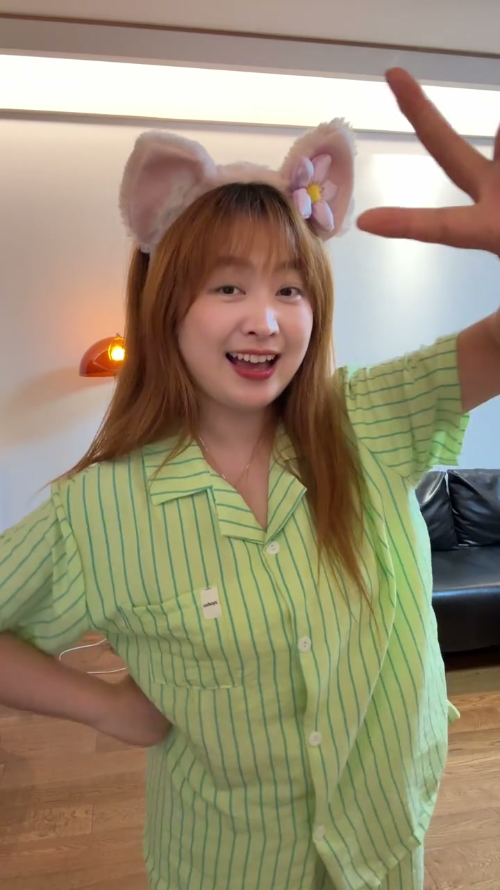
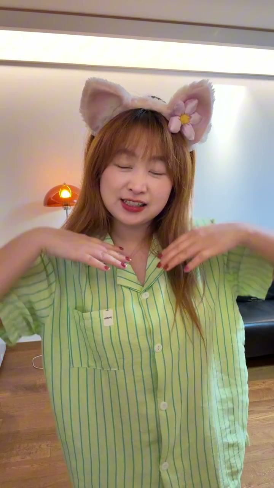
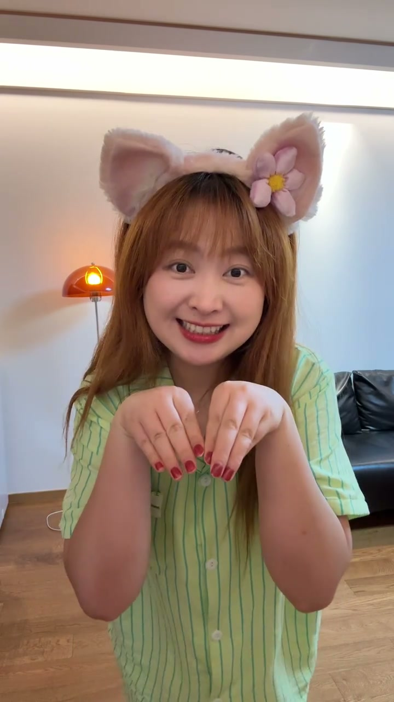

10秒数字拍照法是什么
00:00这是一支无声跟练示范：模特穿着睡衣，用18秒完整演示一遍数字拍照法，全程仅数数“1 2 3 4 5 6 7 8 9”。
00:00核心逻辑：把9个常用姿势编成数字口令，念到哪个数字就摆哪个动作，摄影师用连拍连续抓拍——10秒内收获9张不同状态的照片，解决“不知道怎么摆、一摆就僵”的问题。

[00:01] 数字1：微笑看镜头——开场表情要自然
Number 1: smile at the lens — the opening expression should be natural
数字1-9对应动作
00:02每个数字一个动作，动作越简单越好记越好：1微笑看镜头、2撩头发、3歪头托腮、4比耶举手、5叉腰侧身、6低头笑、7回眸、8遮脸、9放松站。
00:06关键不是姿势多高级，而是切换要快、状态要连续——不要等摄影师喊“好了没”，自己默数自己换。

[00:04] 数字2-3：撩头发、歪头托腮——俏皮有动态
Numbers 2–3: brush the hair, tilt the head, rest on the hand — playful and dynamic

[00:07] 数字4-5：比耶举手、叉腰侧身——活泼显瘦
Numbers 4–5: peace-sign hands up, hands-on-hip side pose — lively and slimming
为什么有效
00:10普通人拍照最大的问题是面对镜头不知道做什么。数字口令把“想姿势”变成“执行指令”，大脑不用临时想，动作反而更放松自然。
00:12连拍还能捕捉到动作切换过程中的自然瞬间，比定点摆拍更有生活感。
[00:10] 数字6-7：低头笑、侧身回眸——温柔氛围大片感
Numbers 6–7: head-down smile, side glance back — gentle, cinematic mood
睡衣跟练的意义
00:14标题里的“睡衣跟练版”意味着：在家零成本练习，穿什么都能练。练的是“数字→动作”的反射，练熟了出门拍照直接调用。
00:16数字9收尾：放松自然站——暗示整套方法的终点是自然不摆拍。
[00:13] 数字8：遮脸/手部动作——神秘故事感
Number 8: face-cover/hand moves — a mysterious, story-driven feel
[00:16] 数字9：放松自然站——收尾不摆拍
Number 9: relaxed standing — end without posing
把9个姿势编成数字口令，念到几就摆几——10秒9张不重样，在家睡衣都能练熟。